Click on images to enlarge

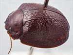
Male, Mitalie, Eyre Peninsula, South Australia

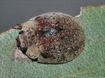
Male, Cowell, Eyre Peninsula, South Australia

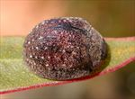
Male, Karkoo, Eyre Peninsula, South Australia

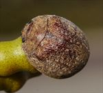
Female, Lock, Eyre Peninsula, South Australia

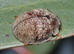
Female, Mangalo, Eyre Peninsula, South Australia
.jpg){kind=link}
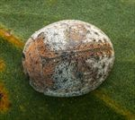
Female, Coolgardie, Western Australia

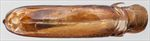
Aedeagus, dorsal view (Mitalie, Eyre Peninsula, South Australia)

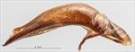
Aedeagus, lateral view (Mitalie, Eyre Peninsula, South Australia)

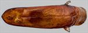
Aedeagus, dorsal view (Pinaroo, South Australia)

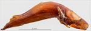
Aedeagus, lateral view (Pinaroo, South Australia)

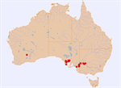
Distribution
Name
Trachymela sp. Ta117
Reference specimen
2017-163a, Mitalie, Eyre Peninsula, South Australia.
Adult Description
Length: ♂ 7.7–9.5 mm (n=18), ♀ (6.6–8.3) 8.8–10.0 mm (n=31).
Colouration:
- Head: mid- to dark-brown, sometimes almost uniformly so, but usually with black colouration present on clypeus and fronto-clypeal suture, rarely extending to anterior margin of clypeus but more commonly extending into anterior region of frons, rarely almost completely black; labrum usually paler or straw-brown; mandibles dark-brown with black tips; antennae usually completely straw-brown or light-brown, sometimes grading to a fractionally darker shade at distal antennomeres, antennomeres 7–11 sometimes with distal extreme very slightly infuscated.
- Pronotum: brown, concolorous with head, with lateral margins often narrowly infuscated, rarely foveal and marginal areas black (specimens from NSW/northern Victoria).
- Scutellum: brown, concolorous with adjacent area of pronotum, sometimes with lateral edges narrowly infuscated.
- Elytra: brown, concolorous with pronotum, often completely so, sometimes with a broad black band along elytral suture from scutellum to elytral summit, less often one or two black patches are present in posterior half of elytral disc, the larger of these in inner half of disc is sometimes connected to the black elytral suture near summit, the smaller towards outer edge of elytral disc is only rarely present; anterior edge sometimes narrowly infuscated; punctures concolorous with surrounding interstices; humeral callus concolorous with surrounds.
- Venter & Legs: head, thoracic ventrites and legs mid- to dark-brown or reddish-brown, abdominal ventrites similar; inside surface of elytral epipleura variable, ranging from brown to almost completely black.
- Cuticular Wax: light-brown and quite unevenly distributed, with a thick coating on head and lateral margins of pronotum; on the elytra, it is usually quite thinly scattered, sometimes uniformly brown, but more usually a number of small and often faint greyish flecks are also present and arranged within the verrucal series, particularly VR3, VR5, VR7 and VR9 and the anterior end of VR2.
Morphology:
- Shape: slightly gibbous, with elytral summit elevated well above anterior margin (H/BL: ♂ 0.44–0.52, ♀ 0.46–0.50) and highest point clearly in front of middle of elytral margin.
- Head: punctures moderately sized (pd ≈ 2–2.5×ef) and quite evenly and densely distributed. Antennae moderately long (AL/BL: ♂ 38–43%, ♀ 34–36(38)%), A4 < A3 (rarely A4 ≥ A3), filiform.
- Pronotum: almost evenly curved transversely over disc, foveal depression slight but always present and without central elevation, lateral margins slightly explanate, puncturation clearly impressed, similar in size but often slightly less densely distributed than those on head, usually evenly-sized, relatively evenly distributed; interstices variable, usually relatively smooth but sometimes rugose, almost obliterating the punctures, punctures become much coarser towards lateral margins. Front margins join lateral margins in a very smoothly rounded right-angle, with lateral margin straight for initial 40–50% of length before curving smoothly and gradually towards the much thicker rear margin.
- Scutellum: surface smooth to uneven, sometimes unpunctured, more frequently with a few shallow punctures.
- Elytra: surface evenly curved, punctures may be distinct and relatively evenly distributed, more often, punctures are partially obliterated by a rough surface consisting of interstices raised into short ridges that may run longitudinally or transversely; some small and relatively inconspicuous verrucae, each with a fine central puncture, are usually scattered among these, sometimes weakly aligned into longitudinal rows; lateral margins noticeably explanate, surface discontinuous under humeral callus. Vertical extension of epipleura very large (HCE/PW = 0.40–0.45).
- Venter: prosternal process narrowest anteriorly, open or lightly closed anteriorly, at most a sparse scatter of short setae on prosternal process and mesoventrite, a single seta on anterior and median trochanter; front edge of metaventrite beveled, truncate; posterior section of epipleura very lightly setose, setae most evident opposite 2nd and 3rd abdominal segments, often very sparse and widely spaced or (rarely) completely absent.
Male Genitalia (Aedeagus):
- Dimensions: quite long (LPE/BL = 30–35%).
- Dorsal view: shaft usually almost parallel-sided from basal sulcus for about 80% of length, sometimes with a slight widening evident at about 30–40% from apex, rarely narrowing slightly but continuously from basal sulcus almost to spatula; dorsal surface smoothly curved with long but shallow dorso-median channel, dorsolateral channels well developed to form a large ostial region, spatula very small, tip protruding slightly, ostial opening quite large.
- Lateral view: shaft curved at about 45⁰ slightly past basal sulcus, then ventral surface almost straight to apex, moderately thick near basal sulcus, then thinning gradually and relatively evenly towards apex, tip small and deflexed.
Immature Stages
- Eggs: Ovoviparous.
- Larvae: Unknown.
Similar species
- Ta76: differs in the elytral surface being much smoother in texture, with relatively large but shallow verrucae present that are quite prominent. Ta76 is evenly curved in outline when viewed laterally and the grey flecks on the elytral disc are much larger and more regularly spaced than those of Ta117.
- Ta89: the size distribution of this species broadly overlaps that of Ta117 and they have a similarly rough-textured elytral surface. The elytra of both males and females of Ta89 are usually prominently explanate, the antennae are relatively longer while the antennal spacing (A-A/BL) is smaller. Fully hardened specimens of Ta89 also tend to be lighter-coloured than those of Ta117. The inner surfaces of the elytral epipleura of Ta89 tend to have black in the posterior half only, never completely black, though there is considerable variation (and overlap) in this character in the two species.
- Ta91: the elytral surface of this species is evenly granular, lacking the extended elevated interstices that give Ta117 a very rough look. It is also flatter and more evenly curved when viewed laterally and lacks black marking on the elytra.
Notes
- Taxonomy: Typical specimens of Ta117 are distinguished by their slightly gibbous and strongly rounded form and relatively rough elytral surface. Verrucae are present but are often quite inconspicuous.
- Distribution & Abundance: Distributed across mallee areas of South Australia, Western Victoria, New South Wales (Balranald to Mildura area), and Western Australia (Coolgardie), where it is often very abundant.
- Host Associations: Individuals of Ta117 have been recorded from several mallee eucalypt species, including Eucalyptus phenax (Symphyomyrtus: Dumaria: Incrassatae), E. sp. “Triangulensis” (Symphyomyrtus: Dumaria: Rufispermae) and E. peninsularis (Symphyomyrtus: Bisectae: Destitutae). The latter record is from a male and female caught off the same mallee individual, with several other specimens of Ta117 at the same site obtained from adjacent E. phenax. The very small specimen [2018-264] was obtained from E. oleosa (Symphyomyrtus: Bisectae: Destitutae). The two Western Australian specimens were found on E. distuberosa (Symphyomyrtus: Dumaria: Rufispermae).
- Morphological Variation: The variability seen in this species comprises firstly the sculpture of the elytra where extreme specimens may have almost no discrete verrucae at all, with the surface roughness being due to nothing more than very convex interstices, to others where there are many prominent (though small) verrucae along with transverse wrinkles. Secondly, the extent of black markings also vary considerably – some specimens are uniformly brown; others have considerable areas of black and/or black verrucae. Thirdly, the colour of the inner surfaces of the epipleura ranges from completely brown to completely black.
Among all this variability, the shape of the aedeagus in this grouping is rather uniform. The most extreme deviation from the typical shape (as represented by the reference specimen) is exhibited by a specimen from Pinaroo (illustrated), in which the aedeagus narrows continually from basal sulcus to apex.
The distribution of female sizes extends over an exceptionally large range of sizes and exhibits two quite widely separated peaks. This strongly suggests that two species are included within this grouping. However, no other morphometric measurements show discontinuities that might indicate that the smaller specimens are different from the larger. However, distribution of the cuticular wax does appear to be different, with the greyish series of spots absent from all the three small female specimens for which images are available. This difference is particularly evident from a small specimen [2022-075] found at the same location (Coonalpyn, S.A.) as a large specimen [2022-074b]. A male found at the same site resembles the larger female in cuticular wax distribution. Some of the smaller specimens also seem to have a denser coverage of wax in the anterior portion of the elytra. The smaller specimens exhibit much the same range of variation in colour and structural features as the larger specimens, although the dorsal surface of the head is more often uniformly brown. It is likely that the small specimens are a separate species of which no male has been available for study.
The specimens from the Balranald to Mildura area are slightly different to typical Ta117. They all have the marginal/foveal areas of pronotum black, the head is often completely black, and the elytral sculpture tends to be more rugged than is typical for Ta117. A single dissected aedeagus from a teneral specimen from this area is very similar to that of a typical Ta117 in shape and size.
Two female specimens from near Coolgardie, Western Australia are included here. Morphologically, both are well within the range of variation encompassed by eastern specimens of Ta117, but the pattern of distribution of the cuticular wax is very different, with large greyish patches of wax (mostly along the lateral margins, in the post-basal depression and apical regions of the elytra) making a strong contrast with the otherwise light-brown wax. This is essentially the “transverse bands” pattern, though some short longitudinal dashes of grey wax are present, particularly along VR5 and VR7 just behind the post-basal depression.
Copyright © 2026. All rights reserved.